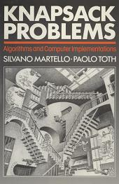

reproduced with the permission of John Wiley and Sons Ltd.
Download Complete Book
Knapsack Problems (22.5MB)
Download Individual Chapters
Chapter 1: Introduction (1.4MB)
Chapter 2: 0-1 Knapsack problem (5.2MB)
Chapter 3: Bounded knapsack problem (1.6MB)
Chapter 4: Subset-sum problem (2.3MB)
Chapter 5: Change-making problem (1.4MB)
Chapter 6: Multiple knapsack problem (2.7MB)
Chapter 7: Generalized assignment problem (2MB)
Chapter 8: Bin-packing problem (1.8MB)
Appendix: Computer codes (4.2MB)
Source codes